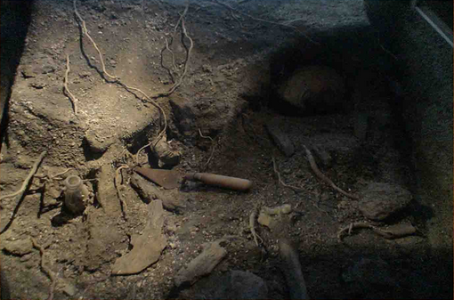
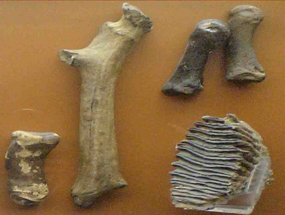
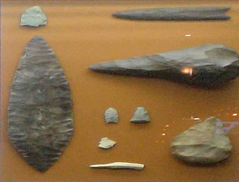

探討人類的過去
地殼的版塊運動，在非洲東部逐漸形成了大裂谷，不但大幅改變地形，也改變了氣候與生態。 住在裂谷西邊的猿類，繼續在雨林裡生活；裂谷東邊的森林面積縮小，有些猿類適應了較乾燥而開闊的草原環境， 而演化出兩足行走，成為人類的祖先。

人類留下的遺跡？
人類演化的證據散佈在全世界各地的泥土裡。經年辛苦的工作，以及相當的運氣，使我們能夠找到這些線索， 進而了解我們的過去。你能從面前這堆東西裡找到人類的遺留嗎？

獸骨與遺留
像這樣的發現，是表示人類獵食動物呢？還是野獸把牠們的獵物帶回到洞穴來？洞穴裡的遺留往往很難做解釋。
我們無法回到從前，但至少要盡可能做最好的推測。有時候骨頭上的一些記號可以幫助我們做判斷。
例如帶有石器刮痕的骨頭，可能表示牠是人類獵來的。

工具
人類最早的工具相當粗糙，後來人類學會更好的方法將材料加工始之能為更有用的工具。
複製古代的工具時可以得知當初所花費的時間，製作的技巧以及工具的效能。